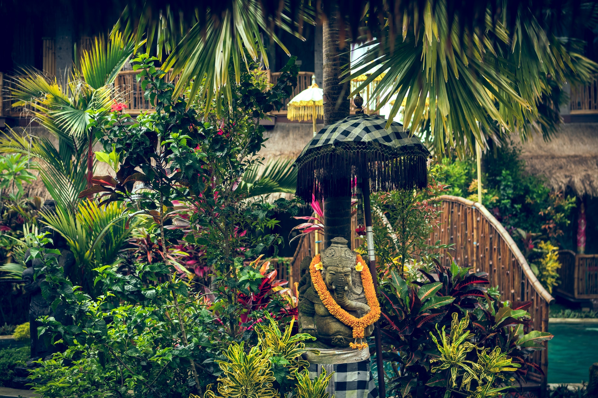
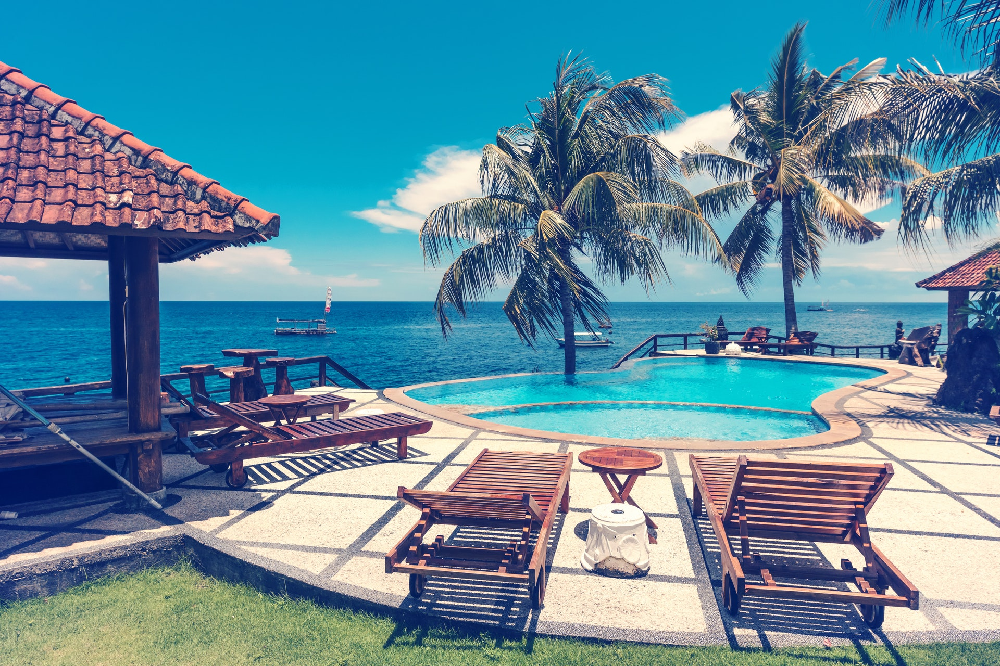

Taniti
"Come Experience the Islands"
About Our Island
Taniti is a small island of less than 500 square miles situated in the beautiful tropics of the Pacific ocean. Here you can experience the friendly and welcoming atmosphere that includes both sandy and rocky beaches for fun in the sun, lush tropical rainforests to be explored, mountains for hiking, and a small harbor where you can personally witness the cultural heritage rich with fishing and agriculture that comes from the local indigenous population of around 20,000 islanders.
"Come Experience the Islands" is the easiest way for us to say that you'll have to see our island for yourself to believe it! When you visit once, you'll keep coming back for more! So "Come Experience the Islands" with us and enjoy all that our wonderful island has to offer.
Continue scrolling for more information on Lodging, Dining, Entertainment, Contact Information and more...
Transportation to the Island
There are two ways to reach the island. Most people arrive to Taniti by air travel. Taniti boasts a small, but efficient, airport that can accommodate both small jets and propeller planes.
Through partnership between airport officials and the Taniti Government's Department of Transportation and Planning, plans are underway to expand the existing airport to accommodate larger jets and more flights to the island in the near future.
Transportation while on the Island
- Taniti City:
- Entire Island:
Available Lodging on the Island

Off The Grid: Tanitian Hostel Looking for an inexpensive option for your stay on our island? Be sure and check out Off The Grid. You'll enjoy all the amenities including a pool, free wi-fi, a common kitchen, and outdoor areas for grilling and games.
Located in the heart of Yellow Leaf Bay
Pacific Royale, A Goldstar Resort If you want a Luxury Experience for your visit, there's none better than Pacific Royale. This All-Inclusive 4 Star resort won't disappoint with its beautiful grounds, ocean front suites with large balconies, five on-site restaurants, and entertainment provided nightly.
Located on the white, sandy beaches of Taniti Island

Local Family Owned HotelsIf you're looking for a hotel experience at a reasonable rate, there are several Family Owned Hotels across the island. Amenities vary by hotel. Contact individual hotels for specific details.
Located inside Taniti City
Bed & BreakfastsWant a more quiet and quaint experience? We have a growing number of Bed & Breakfasts to meet your needs. Meet local families who want nothing more than to provide you the best experience possible in their homes.
Located across the island
*All lodging establishments are strictly regulated and regularly inspected by the Tanitian Government for quality and safety.
Food & Dining Options
Dining In
Taniti has two large Supermarkets, two Grocery Stores, and one Convenience Store that is open 24 hrs / Day for your convenience.
Located in Taniti City and Yellow Leaf Bay
Dining Out
There are currently 11 Restaurants on the island with enough options to satisfy even the pickiest diners.
Local Cuisine
Five Restaurants serving dishes made with mostly locally caught fish and locally grown rice.
Located inside Taniti City and Yellow Leaf Bay
American Cuisine
Three Restaurants serve American Style Cuisine, including Hot Dogs, Hamburgers & Fries
Located in Yellow Leaf Bay
Pan-Asian Cuisine
Two Restaurants serve Pan-Asian Cuisine for a taste of Asia that won't disappoint.
Located in Taniti City and Yellow Leaf Bay
Sightseeing & Entertainment
*Coming in 2020: Taniti Links Golf Course
Sightseeing & Entertainment Options
Sightseeing
There is always plenty to do and see on Taniti. You can take advantage of boat and bus tours of the island, hike through the rainforests & to the volcano, see the native architecture in Taniti City or just relax on the white and sandy beaches that encircle Yellow Leaf Bay.
Entertainment
Entertainment options on the island are abundant and include all the following:
Frequently Asked Questions
FAQ
What currencies are accepted on the island?
Taniti uses the US Dollar as its main currency. However, many businesses also accept euros & yen.
Do I need a power converter when traveling to Taniti?
Taniti shares the same type of power grid as the United States with 120 volt power outlets.
What languages are spoken on the island? Do I need to learn a new language?
Many of the younger natives speak fluent English and English is primarily spoken in Taniti City; however, be aware with that older residents, especially in rural areas, very little English is spoken.
What is the Drinking Age on the island?
The drinking age on Taniti is 18 Years old. Also be aware that alcohol is not allowed to be served between the hours of midnight and 9:00 am.
What if I have a medical emergency while visiting the island?
Taniti has one Hospital and several clinics with many multilingual employees who are ready to help with any medical issues that may arise.
Are the attractions on the island open every day of the year?
There are several National Holidays and hours of attractions and restaurants may be impacted Please check hours of those establishments you wish to visit prior to booking your trip and plan accordingly.
Is it safe to leave the resort on the island?
Violent crime on the island is very rare and any crimes committed are usually petty crimes. However, please be aware of your personal belongings at all times to avoid becoming a victim of pickpocketing as you navigate the island.